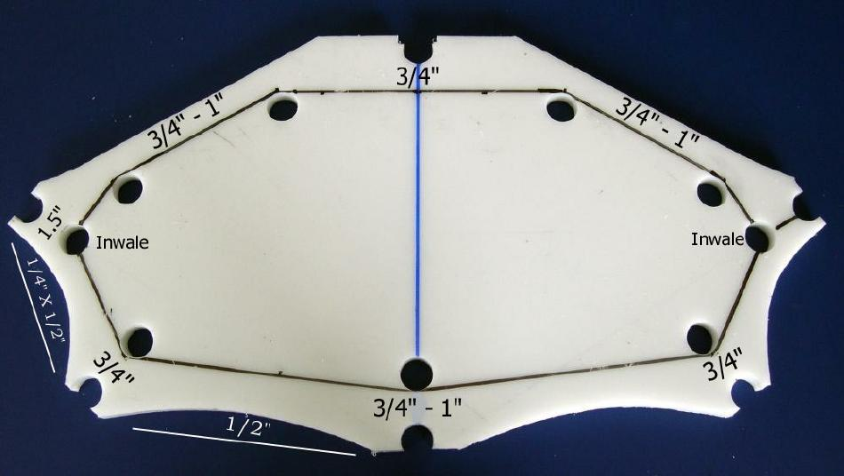

| Cross Sections | Menu Previous Page Next Page |
|  | |
|
Center Cut - Mark the center of the cross section for cutting. Allow 3/4" to 1" between the stringer holes and the inside line, and between the outer and inner edge. See photo for reference. The inside holes are there to smooth out the transition wherever two lines intersect. It is not necessary to do this as the line can be cut entirely by jigsaw. Note the line at the inwales. They must be 1/2" from the inside edge of the holes to permit "snapping-on" of the inwale tubes. |
|